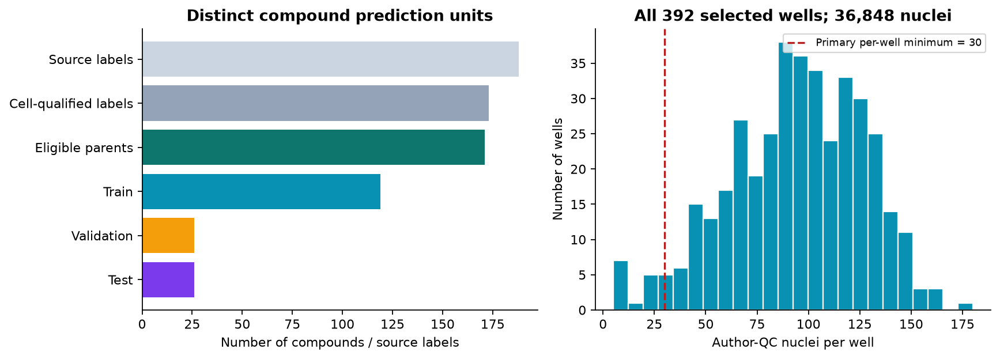
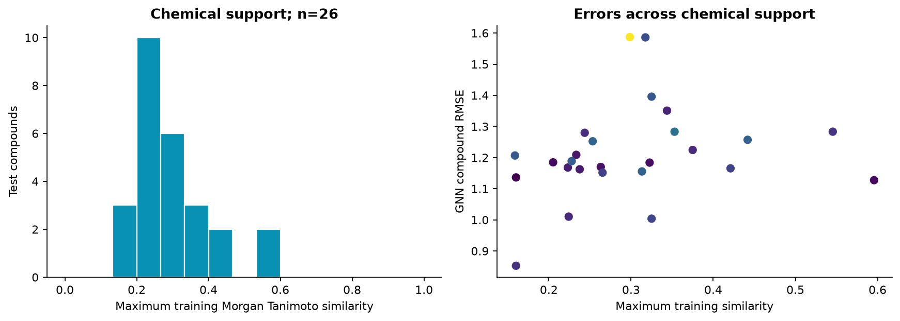
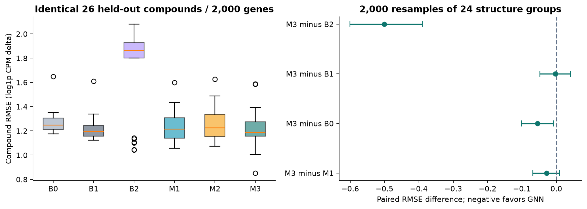
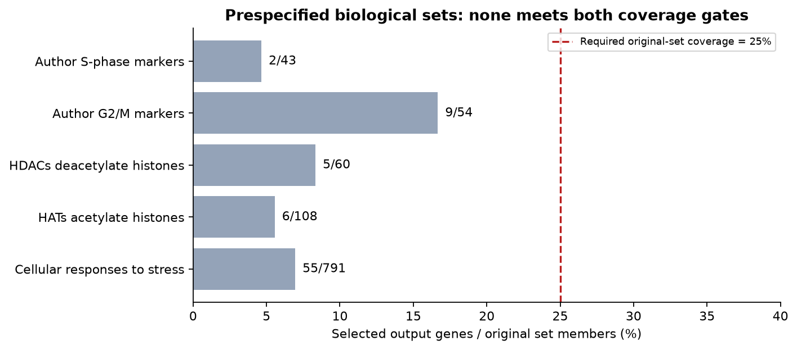
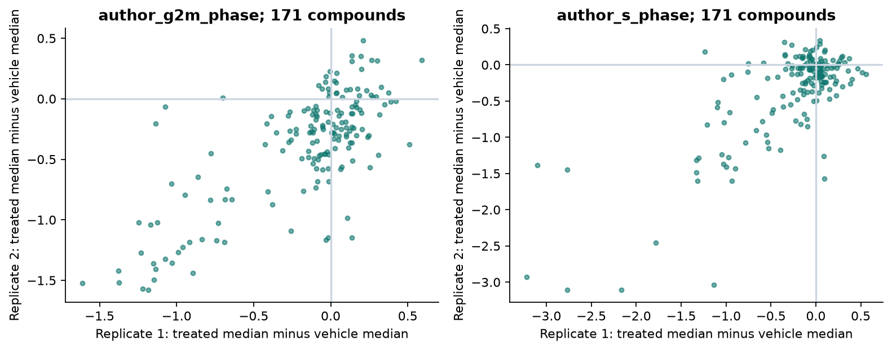
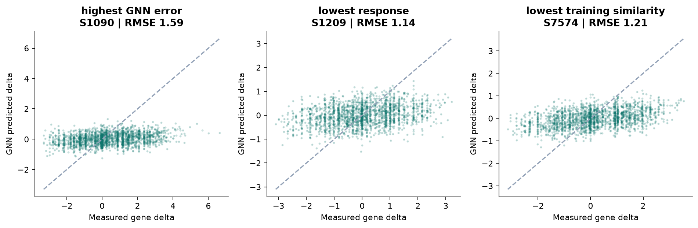

DRUGPERTURB · FROZEN BENCHMARK v1
Can chemical structure predict transcriptional change?
A public-data study of A549 cells exposed for 24 hours at 1 µM, comparing simple references with fingerprint and molecular-graph models.
The molecular GNN achieved a mean compound RMSE of 1.214, compared with 1.243 for the validation-selected fingerprint ridge reference (2.3% lower point estimate).The paired 95% structure-group interval includes zero; this experiment does not establish a reliable GNN advantage over the selected reference.
The training-mean baseline achieved 1.217. The GNN-minus-mean difference was -0.0026 (95% interval -0.0475 to 0.0419); compound-specific added value remains unestablished.
1. Data and experimental units
188 source treatment labels were evaluated. 173 met the two-replicate cell-count rule; chemical qualification and duplicate-parent handling left 171 distinct standardized parent compounds. These contributed 33,055 treatment nuclei and 886 nuclei in eight unique matched vehicle wells. The broader QC extract contains 36,848 nuclei across 392 wells, including excluded treatments and additional vehicle wells. Cells improve response measurement; they are not additional independent drugs.
The frozen split contains 119 training, 26 validation and 26 test compounds. The test comprises 22 ring-scaffold groups and two acyclic parent groups. No canonical parent or defined structure group crosses a split.

2. Prediction task and chemical support
For each well, raw human-gene UMI counts were summed, scaled to counts per million, and log1p transformed. The response is treated minus its exact plate, replicate and dose-pattern vehicle; the two replicate differences receive equal weight. Input features contain chemical structure only. Author embeddings, global size factors and measured treated-cell expression are never model inputs.
Only the training compounds selected the 2,000 most variable genes, standardization and 20 target principal components. The retained components explain 67.9% of standardized training variance. Predictions return to the actual selected-gene scale for every validation and test score; measured truth is never PCA-smoothed. The absence of a low-expression filter and the small compound sample can favor noisy variable genes and limit biological coverage.

3. Model comparison
| Method |
Description |
Mean compound RMSE |
Mean gene-rank correlation |
Undefined rank correlations |
| B0 |
Zero change |
1.2694 |
NA |
26 |
| B1 |
Training mean |
1.2170 |
0.2698 |
0 |
| B2 |
Chemical neighbor |
1.7149 |
0.0725 |
0 |
| M1 |
Fingerprint ridge |
1.2430 |
0.2127 |
0 |
| M2 |
Fingerprint MLP |
1.2532 |
0.1920 |
0 |
| M3 |
Molecular GNN |
1.2144 |
0.2755 |
0 |
RMSE measures error in the size of expression change; lower is better. Each drug first receives its own RMSE across 2,000 genes, then drugs are weighted equally. Spearman measures gene-change ranking, not amplitude. The zero-response baseline has undefined ranking correlation for all 26 drugs and is retained as NA.
Ridge used four fixed penalties. Each neural model used four fixed configurations and three seeds; checkpoint selection used actual validation gene-space error. The chosen candidate averages three seed predictions, with all individual seed results retained. GNN has two bond-aware message-passing layers with mean neighborhood and molecular pooling. No pretrained model or external training data were used.

GNN minus M1: -0.0286, 95% interval [-0.0680, 0.0087]. Intervals resample 24 structure groups 2,000 times, retaining all compounds within sampled groups. They are conditional on this split and fitted models; shared controls, plate effects, retraining and external-study variation are not fully covered. Three random seeds are computational repeats, not new biological samples.
4. Biological interpretation and coverage
Cell-cycle markers and Reactome 97 acetylation, deacetylation and stress sets were frozen before evaluation. Exact symbols were mapped first, followed by official HGNC mappings to the original gene annotation. A quantitative pathway comparison requires at least 10 selected genes and at least 25% of original members. None of the five sets passed both gates. Pathway recovery is therefore not evaluated; missing coverage is not repaired after inspecting test results.
| name |
original_members |
mapped_unique_genes |
selected_genes |
fraction_original |
quantitatively_evaluable |
| Author S-phase markers |
43 |
43 |
2 |
0.0465 |
False |
| Author G2/M markers |
54 |
54 |
9 |
0.1667 |
False |
| HDACs deacetylate histones |
60 |
59 |
5 |
0.0833 |
False |
| HATs acetylate histones |
108 |
107 |
6 |
0.0556 |
False |
| Cellular responses to stress |
791 |
783 |
55 |
0.0695 |
False |

Scores use all fixed 43 S and 54 G2/M marker genes at single-cell resolution, independently of model output selection. Each cell is normalized by total human UMI. The paired plots describe marker-expression shifts across two experiments; they are not phase assignments or evidence of causal pathway activity.

5. Error cases and experimental reliability
Three cases follow fixed rules: highest GNN error, lowest measured response magnitude, and lowest similarity to training chemicals, with distinct compounds. Every scatter includes all 2,000 output genes. These cases illustrate error patterns; they did not change the model or test protocol.
| case_rule |
compound_id |
name |
rep1_cells |
rep2_cells |
max_train_tanimoto |
replicate_rmse |
gnn_rmse |
| highest_GNN_error |
S1090 |
Abexinostat (PCI-24781) |
62 |
119 |
0.2985 |
2.1017 |
1.5870 |
| lowest_response |
S1209 |
Fluorouracil (5-Fluoracil, 5-FU) |
85 |
114 |
0.1600 |
2.0088 |
1.1362 |
| lowest_training_similarity |
S7574 |
GSK-LSD1 2HCl |
88 |
128 |
0.1587 |
2.1331 |
1.2067 |

Across the26 test compounds, median replicate Spearman is 0.180 and median replicate RMSE is 2.101. Two-replicate disagreement combines measurement noise and experimental variation; it is not a precise estimate of irreducible error. Low cell yield is not automatically evidence of toxicity. Per-replicate and plate-level errors are available in the downloadable tables.
6. Development diagnostics
Three compound-level folds and nested 25%, 50%, 100% learning subsets use only the original development data. Each fits preprocessing again. GNN uses the selected settings and a fixed epoch budget derived from validation; no evaluation-fold label controls training. GNN had higher error than Ridge in all three exploratory compound folds. These comparisons can use different gene sets and compound compositions, so a score difference cannot be attributed solely to chemical novelty or training size. This is a single-seed diagnostic, not a replacement for the primary frozen test.
| diagnostic |
run |
method |
n_train_compounds |
n_evaluation_compounds |
mean_compound_RMSE |
| compound_cv |
cv_fold_1 |
M1 |
79 |
40 |
1.2412 |
| compound_cv |
cv_fold_1 |
M3 |
79 |
40 |
1.2577 |
| compound_cv |
cv_fold_2 |
M1 |
79 |
40 |
1.2378 |
| compound_cv |
cv_fold_2 |
M3 |
79 |
40 |
1.2751 |
| compound_cv |
cv_fold_3 |
M1 |
80 |
39 |
1.2300 |
| compound_cv |
cv_fold_3 |
M3 |
80 |
39 |
1.2366 |
| learning_curve |
learning_25 |
M1 |
30 |
26 |
1.2270 |
| learning_curve |
learning_25 |
M3 |
30 |
26 |
1.2279 |
| learning_curve |
learning_50 |
M1 |
60 |
26 |
1.2317 |
| learning_curve |
learning_50 |
M3 |
60 |
26 |
1.2284 |
| learning_curve |
learning_100 |
M1 |
119 |
26 |
1.2432 |
| learning_curve |
learning_100 |
M3 |
119 |
26 |
1.2130 |
7. Sensitivity analyses
Frozen predictions are compared with an alternative same-plate vehicle definition and with the subset passing a 50-cell threshold. On the same 26 test compounds, the alternative two-vehicle definition changed point-estimate rankings: zero-change RMSE 1.0131, training mean 1.0150, Ridge 1.0368 and GNN 1.0395. Lower absolute errors here reflect changed reference responses, not better models. The result is sensitive to the control definition. The 50-cell check retains 24 of26 compounds. These checks alter the reference or evaluated subset; they are not independently retrained benchmarks or external validation.
| method |
scenario |
n_compounds |
B0 |
B1 |
B2 |
M1 |
M2 |
M3 |
|
alternate_two_vehicle_mean |
26 |
1.0131 |
1.0150 |
1.5970 |
1.0368 |
1.0448 |
1.0395 |
|
primary_all_test |
26 |
1.2694 |
1.2170 |
1.7149 |
1.2430 |
1.2532 |
1.2144 |
|
primary_on_alternate_qualified |
26 |
1.2694 |
1.2170 |
1.7149 |
1.2430 |
1.2532 |
1.2144 |
|
primary_treatment_both_replicates_ge50 |
24 |
1.2660 |
1.2110 |
1.6988 |
1.2333 |
1.2434 |
1.2051 |
8. What the study supports
| Testable hypothesis | Observed evidence | Alternative explanation | Still required |
|---|
| Structure helps predict drug-specific responses | GNN has a slightly lower point error than the mean baseline | Intervals overlap zero; shared control/plate effects, average responses and experimental noise may contribute | Prespecified independent perturbation dataset and stronger compound coverage |
| Epigenetic mechanisms are recovered | Fixed pathways have insufficient output coverage | Training variance selection emphasizes other/noisy genes | A new protocol with training-defined expression filtering and adequate pathway coverage, evaluated on fresh heldout data |
| Predictions transfer across biological contexts | Only A549/24h/1µM was studied | Cell-state and dose dependence are untested | Separate public dose/cell-line datasets; no private or wet-lab inputs are assumed |
This model does not establish drug efficacy, target engagement, toxicity, clinical benefit or antibody-binding/design performance. Its drug-discovery contribution is an auditable molecular-learning and perturbation-response evaluation workflow.
9. Reproducibility and sources
Real main training ran on the primary CPU host in approximately 3.7 minutes. Source revision: 4847c26e05c0283d704a5fab9a85f272d0a5981a. Inputs, split, selected genes, model weights, configuration, trajectories and predictions have SHA256 receipts. Final evaluation verifies the prediction seal before loading test truth. No paid AWS execution or independent external dataset is claimed. Subsequent verification established identical predictions in two fresh runs on one fixed host/container and consistent Docker inference from the saved primary weights. Cross-host GNN retraining failed the prespecified numerical tolerance; see the separate execution evidence. These checks do not replace the primary scientific results.
Source manifest · Frozen split · All compound metrics · Paired intervals · Every training run · Reproduction instructions
Public sources: GEO GSE139944; Srivatsan et al., Science 2020; Pinned author preprocessing; Reactome 97; HGNC. Public download availability does not imply that the project code license applies to third-party source data.